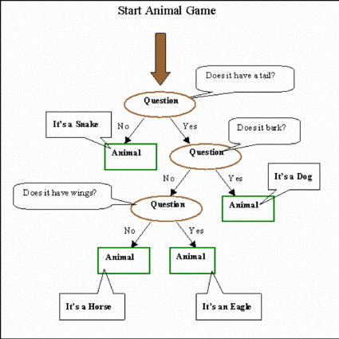

En este clásico juego que se ha utilizado desde años y
con versiones para los primeros BASIC, se pregunta para adivinar de qué
animal se trata haciendo una serie de preguntas. Si el programa no adivina de
qué animal se trata, pregunta de manera que pueda aprender para juegos
futuros,
En el comienzo , el juego solo conoce el perro, así que hasta que aprenda
un poco más, será un poco aburrido. También haré
preguntas para distinguir cada nuevo animal de los anteriores cargados en su
base de datos.
El original de esto es uno de los innumerables tutoriales de distintos Smalltalk
que hay en Internet.
Se acompaña el dibujo del original.
Podemos reconocer que es un árbol invertido con su raíz en la
parte superior . Los nodos Question (Pregunta) representan las ramas y las hojas
son los nodos Animal,
Elegir una de los animales mostrados (Dog, Snake, Eagle , Horse) (Perro, Serpiente,
Aguila, Caballo) como intentos de acierto y siga el +arbol de decisión
desde la raiz.
Parece entonces que podemos construir nuestra base de conocimientos con dos
clases de objetos, Animales y Preguntas.
También debemos guardar el objeto raíz ( una Pregunta) en alguna
parte para poder comenzar el juego.
Ahora , agregaremos la clase Animal a nuestra imagen. Repasemos un poco la herencia
de clases.
Busquemos por ejemplo en el System Browser la clase Form que hemos usado. Con
la clase seleccionada, aquellos afortunados que tienen más de un botón,
pulsen botón derecho o h o expand hierarchy y les mostrará un
Class Hierarchy Browser.
El Browser mostrará alguna de las clases que ya existen en la imagen.
Esta jerarquía es importante dado que gobierna como una clase en particular
“hereda” la funcionalidad de sus clases padres. Eligiendo un lugar
apropiado en la cadena de herencia para definir nuevas clase nos ahorrará
tiempo n no escribirá código que ya esta hecho (reusabilidad).

Recordamos algunas definiciones. Vemos que una clase puede tener varias clase
hijas. Estas se conocen como subclases. La clase padre se conoce como Superclase
Volvemos a nuestra clase Animal. Donde en la jerarquía de clases la creamos?.
Lo primero a considerar es que clase de información contiene. Mirando
el diagrama vemos que cada animal conoce su nombre, esto es que clase de animal
es. Esta información estará en forma de una cadena de testo String
en Smalltalk: Ejemplo ‘Perro’. `Gato’, ‘Caballo’. Así
una posible ubicación sería en la clase String
Si buscamos la clase String nos encontraremos lo siguiente
Veremos métodos que realmente no nos son útiles, como los primeros
de la lista . En realidad , si pensamos un poco , veremos que Animal no “Es
un” String , sino que “Contiene un” String. Esta es una decisión
fundamental que los diseñadores de software hacen cuando hacen "object
oriented analysis" sobre un problema de diseño. A menudo el problema
es lo suficientemente complejo como para dibujar un diagrama del modelo de objetos
que ilustre las relaciones entre los varios objetos en el sistema. Esta relaciones
se describen como Es un y Contiene un.
Entonces , ya que Animal contiene un String, es mejor que sea una subclase de
Object.
Ahora creemos una clase como subclase de Object.
Recordar, todo lo que hagamos estará en una categoría Ejercicios,
según ya vimos.
En el panel correspondiente debe decir
Object subclass:
#Animal
instanceVariableNames: 'nombre'
classVariableNames: ''
poolDictionaries: ''
Aceptar esto.
Una de las cosas sobre la programación orientada a objetos en general
y de Smalltalk en particular es que no se tiene acceso a los datos guardados
dentro del objeto excepto que haya métodos para eso escritos en la clase.
Por ejemplo podemos guardar y obtener el valor de la variable de instancia nombre.
Para hacer esto agregamos dos mensajes , nombre y nombre:
Este tipo de mensajes se conoce como mensajes de acceso o accessor methods
nombre
“ Devuelve el nombre del receptor ”
^nombre
Agregar lo anterior a la lista de mensajes, creando una categoría
de mensajes denominada acceso
nombre:unaCadena
“Privado – inicializa el nombre del receptor a unaCadena”
nombre := unaCadena
Agregar lo anterior a la lista de mensajes.
Este mensaje recibe un parámetro denominado unaCadena. Los nombres de
las clases, categorías, mensajes son importantes. Tratar siempre de elegir
buenos nombres que den al próximo que lea nuestro código una idea
de que hace nuestro código al leerlo. Hacer buenos comentarios
Probando nuestro código
Lo bueno del Smalltalk es que inmediatamente podemos probar nuestro código.
Creamos una instancia de Animal en el Workspace
miAnimal _ Animal new.
Ejecutar (do it)
Ahora escribir
miAnimal nombre
Remarcar y pulsar botón derecho print it. (Siempre que de adelante en
los tutoriales diga mostrar esto es lo que deben hacer) Debe aparecer nil al
lado de lo escrito
Agregar miAnimal nombre: ‘Perro’ ejecutar y remarcando la línea
anterior mostrar
Nil
Cuando en el ejemplo , luego de crear la instancia pedimos mostrar su nombre,
vimos como resultado nil, Esto es un valor especial que Smalltalk usa para indicar
que la variable no ha sido inicializada.
Nil tiene otros usos aparte de ver si una variable esta o no inicializada, por
ejemplo para representar el concepto de algo indefinido
Por defecto, todas las clases responden al mensaje #new con una nueva instancia
de la clase
Sin embargo, usar #new para crear una nueva instancia de Animal no es ideal
ya que finalizamos con un animal sin nombre. Sería mejor asegurarse que
cada instancia sea creada con un valor String válido. Podemos hacerlo
agregando mensajes de creación de instancias que tomen como parámetro
el nombre del animal. Este tipo de mensaje no es aplicable a la instancia de
Anima sino a la clase. Por esta razón se denomina class method en vez
de los mensajes de instancia que usamos hasta ahora.
Para crear un mensaje de clase, fijarse que está seleccionado de clases
en el browser
En el panel de creación de categorías . elegir en el menú
contextual new category y se desplegará el siguiente menú .
elegir instance creation, (creación de instancias)
Hay muchas situaciones en que deseamos mostrar nuestro objeto como texto.
Por convención Smalltalk provee mensajes definidos en Objeto para este
propósito.
Agreguemos al Workspace y mostremos
miAnimal printString
Nos informó el nombre de la clase (anAnimal)
Agreguemos una categoría a la clase animal denominada mostrar (displaying)
y los siguientes mensaje a la misma
displayOn: aStream
"Answer the name of the receiver prepended by 'a' or 'an' as appropriate"
| aOrAn |
aOrAn := nombre first isVowel ifTrue: ['an '] ifFalse: ['a '].
aStream nextPutAll: aOrAn; nextPutAll: self nombre.
printOn: aStream
"Answer the name of the receiver as a developer would wish to see it."
super printOn: aStream.
aStream nextPut: $(.
self displayOn: aStream.
aStream nextPut: $)
.Los mensajes #printString and #printOn:están definidos en la clase
Object, de la cual Animal hereda. Lo que acabamos de hacer se denomina overriding
y reemplaza el mensaje de la clase por el mensaje de la instancia
Agreguiemos nuevamente miAnimal printString al Workspace y mostremos.
En el último mensaje agregamos el uso de estos dos importantes
conceptos.
Si en un mensaje, deseamos enviar otro mensaje al objeto receptor, entonces
usamos la palabra especial self para representar el objeto. Miremos el mensaje
#printOn y veamos como trabaja. Queremos utilizar #displayOn para imprimir el
nombre del animal como parte de la representación total,
Lo hacemos mandando el mensaje #displayOn a self.
Un concepto mas complicado es el de super. Lo utilizamos cuando deseamos mandar
un mensaje al receptor pero no en ninguna declaración local (esto es
en la clase ). Cuando utilizamos super , el sistema comienza la búsqueda
del mensaje a ejecutar , no en la clase del receptor sino en la superclase.
Es frecuente querer heredar la funcionalidad pero agregar funcionamiento, esto
es lo que se hizo con #printOn.
Vimos anteriormente que el juego de los animales probablemente requiere
dos clases. Ahora crearemos la clase Pregunta.
Que conocemos del comportamiento de Pregunta?. Observando el diagrama de la
estructura de datos para un juego tópico, vemos que Pregunta también
necesita contener algún texto con la pregunta que el sistema debe hacer.
Aparte de esto, cada objeto Pregunta necesita indicar cual rama del árbol
seguir según se conteste Sí o No a la pregunta. Parece entonces
que necesitamos tres variables, texto, si y no. También parece que la
superclase sea nuevamente un Object.
Siguiendo los pasos para agregar clases al sistema.
Object subclass: #Pregunta
instanceVariableNames: 'texto si no'
classVariableNames: ''
poolDictionaries: ''
Agregar los siguientes mensajes para obtener los valores de las tres variables
de instancia.
si
“ Devuelve la rama en el árbol de conocimiento para tomarlo como
resultado de la pregunta al receptor”
^si
no
“ Devuelve la rama en el árbol de conocimiento para tomarlo como
resultado de la pregunta al receptor”
^no
texto
“Devuelve la pregunta del receptor como una cadena de texto”
^ texto
Ciertamente es útil acceder a los valores de estas variables separadamente.
Sin embargo , una vez que se ha creado una instancia de Pregunta, no necesitamos
darle valores a estas variables nuevamente.
Por tanto, tiene sentido utilizar un mensaje privado para dar valores a todas
las variables de una vez durante la creación de instancia. Usaremos para
esto el siguiente mensaje.
texto: unaCadena si: caminoSi no: caminoNo
“ Privado – Coloca el valor unaCadena al receptor texto, el valor
caminoSi al receptor si y el valor caminoNo al receptor no. Con un pequeño
truco, al final el receptor cambia su identidad con la de caminoNo ”
texto := unaCadena.
si := caminiSi.
no := self.
self become: caminoNo.
Agregamos estos mensajes en la categoría acceso.
Ahora necesitamos un mensaje de clase cuando creamos una instancia de
Pregunta
Asegurarse por tanto , de que el browser muestre que está listo para
clases, de otro modo podemos borrar lo que acabamos de agregar del lado de las
instancias.
texto: unaCadena si: caminoSi no: caminoNo
“Devuelve una instancia del receptor (una Pregunta) con unaCadena dirigiendo
hacia los nodos de caminoSi y caminoNo como resultado de la pregunta”
^self new texto: unaCadena si: caminoSi no: caminoNo
Este mensaje se agrega a la categoría creación de instancias
Creando una base de conocimiento que contenga la base de conocimiento.
Antes mencionamos que necesitamos guardar la raíz de la base de conocimiento
en una variable . Podríamos utilizar una variable global para este propósito.
Sin embargo, es mejor evitar esto para evitar conflicto con nombres similares
en otra aplicación. La alternativa es utilizar una variable de clase.
Vimos como se pueden utilizar las variables de instancia para los datos. También
es posible crear un tipo de variable asociada con cada objeto particular en
la clase.
Seleccionamos la clase Animal y disponemos el browser para clases. Modificar
y aceptar el cambio
Por convención las variables de clase comienzan con Mayúsculas.
Esta nueva variable solamente se podrá usar dentro del alcance de la
clase Animal. Esto significa que se puede utilizar en cualquier mensaje que
está definido para Animal o sus subclases.
No se puede referenciar la variable KnowledgeBase desde otra clase o desde el
workspace. Esto significa que no se puede referenciar desde Pregunta. Este nivel
de privacidad comparado al de las verdaderas globales significa que otro programa
o clase no la pueden modificar por error.
Inicializamos KnowledgeBase de manera de obtener un objeto adecuado en la raíz del juego al comienzo. Si agregamos esta inicialización como parte de los mensajes de clase luego podemos reusar cuando queremos reinicial el juego (olvidar lo aprendido). Así agregamos el siguiente mensaje de clase a Animal en la categoría inicializar.
inicialize
“Inicializar la base de conocimiento del juego de los Animales .
Al comienzo solamente conocemos el perro “
KnowledgeBase:= self nombre:= ‘Perro‘
Ahora en el workspace, evaluar lo siguiente de manera de realizar la
inicialización.
Animal inicialize
La inclusión de un mensaje #inicialize tiene un significado adicional
cuando grabamos nuestro trabajo para ser utilizado por otro. Cuando se agrega
una clase en la imagen, el sistema chequea para ver si existe un mensaje #inicialize
para ejecutarlo automáticamente en caso afirmativo. Como se ve, esta
es una buena forma de asegurarse que quedan adecuadamente seteadas las variables
de clase.
Ahora solo nos faltan pocos mensajes que terminarán de colocar todas las piezas juntas. Veamos un poco de la forma en que encontraremos el código escrito en la nomenclatura inglesa.
Animal>>thisMethod
Indicates that thisMethod belongs on the instance side of the Animal class
Animal class>>thisMethod
Indicates that thisMethod belongs on the class side of the Animal class
Question>>thisMethod
Indicates that thisMethod belongs on the instance side of the Question class
Question>>thisMethod
Indicates that thisMethod belongs on the instance side of the Question class
El símbolo >> se utiliza como forma de documentar que el
mensaje (método) pertenece a una clase particular.
Haciendo preguntas
Cuando el juego funciona, la computadora nos hará preguntas. A medida
que el juego recorra el árbol de conocimiento en un momento en particular,
estará en un nodo Pregunta o si le parece que conoce que animal es ,
en un nodo Animal. Si repasamos el diagrama, vemos que todo el tiempo nos preguntará.
“Tiene alas ?” Para un objeto Pregunta o
“Estás pensando en un águila?” para un objeto Animal.
Lo importante ahora es ver que podemos escribir el código del juego de
tal manera de independizarnos del tipo de nodo. Podemos hacerlo enviando un
mensaje #ask a cada nodo e implementando un método adecuado #ask en cada
clase Animal y Pregunta. Este comportamiento es tópico de la programación
orientada a objetos y se denomina Polimorfismo.
Así que agreguemos nuestros métodos polimórficos #ask a
Pregunta y Animal. Colocarlos en la categoría operaciones.
ask
| repuesta pregunta miAnimal |
pregunta := 'El animal es que piensa ',self texto.
repuesta _ FillInTheBlank request: pregunta.
repuesta = 'SI' ifTrue: [miAnimal _ self si.
repuesta _ 'El animal era ', miAnimal nombre.
PopUpMenu inform: repuesta
]
ifFalse: [miAnimal _ self no.
miAnimal ask]
Ahora el método Animal>>ask . Cuando es llamado, la computadora
piensa que tiene una repuesta pare el animal, así que pregunta si la
repuesta es correcta, y si es así, gana el juego. Si no, pregunta por
un nuevo Animal para crearlo con la repuesta correcta y para una nueva Pregunta
que sea distinta de la original. Veremos que hay algunos nuevos mensajes que
se envían para los que no hemos codificado métodos, pero los haremos
posteriormente.
Animal>>ask
ask
| repuesta pregunta newAnimal newQuestion |
pregunta := 'El animal es que piensa es ', self nombre.
repuesta _ FillInTheBlank request: pregunta.
repuesta ='SI' ifTrue: [PopUpMenu inform: 'Acerte '].
repuesta ='NO' ifTrue: [newAnimal := Animal prompt ].
newQuestion := Pregunta preguntarParaDiferenciar: self from: newAnimal.
pregunta := 'Desea continuar jugando ? '.
repuesta _ FillInTheBlank request: pregunta.
repuesta ='SI' ifTrue: [Animal playGame ].
Preguntando por un nuevo Animal
Vemos en el último método una necesidad de crear un nuevo Animal
preguntando por su nombre.
Animal class>>prompt
prompt
"Prompt for a new animal to add to the game"
| newName |
[newName isNil or: [newName isEmpty]] whileTrue: [
newName _ FillInTheBlank request: 'En que animal estaba pensando ?'.].
^self nombre: newName
Como vemos, el método usa una clase llamada Prompter, la que se
utiliza para pedir al usuario una cadena de texto. Esta se chequea para validez
y se utiliza para crear una instancia de Animal utilizando nuestro método
#nombre . dado que el método #prompt pregunta por una nueva instancia,
tiene sentido colocarlo en la categoría creación de instancias.
Recordar que es un método de clase, así que utilizar el browser
seleccionado para clases.
Ingresando una nueva Pregunta
Y finalmente , necesitamos un método para un nuevo objeto Pregunta.
Pregunta class>> preguntarParaDiferenciar
preguntarParaDiferenciar: anOldAnimal from: aNewAnimal
| viejo nuevo questionText pregunta |
viejo _ anOldAnimal nombre.
nuevo _ aNewAnimal nombre.
pregunta := 'Ahora por favor ingrese una pregunta que se responda por SI para
',nuevo.
pregunta := pregunta, ' Y por NO para '.
pregunta := pregunta,viejo.
[questionText isNil or: [questionText isEmpty]] whileTrue: [
questionText _ FillInTheBlank request: pregunta.
].
^self texto: questionText si: aNewAnimal no: anOldAnimal
Estamos lista para agregar un último método para nuestro
juego de los animales. Necesitamos un método sencillo para comenzar el
juego.
Animal class>>playGame
playGame
PopUpMenu inform: 'Piense un animal y yo intentare adivinar'.
KnowledgeBase ask.
Hacer fileIn de Ejercicios.st y de Workspace.text.
Divertirse y analizar lo que hace el programa

{kind=link}
{kind=link}